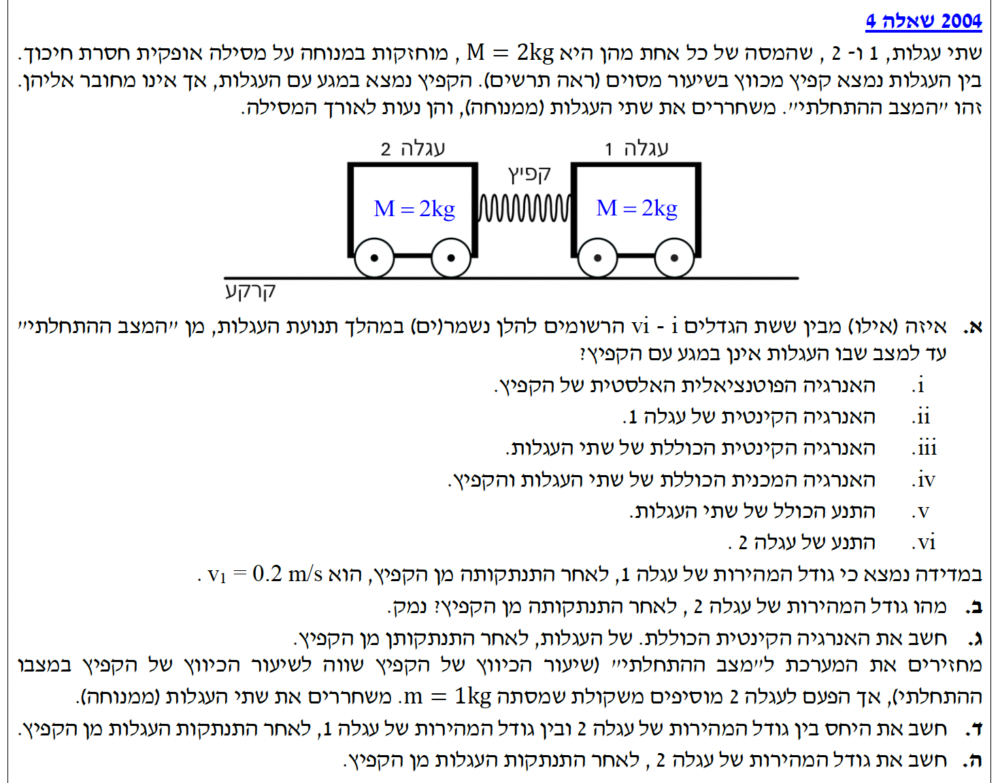

תלמידים יקרים, בשאלה זו אנו פוגשים מערכת קלסית של שתי עגלות הנדחפות זו מזו באמצעות קפיץ על פני משטח אופקי חסר חיכוך.
זוהי הזדמנות מצוינת ליישם את חוקי השימור שלמדנו. זכרו: ניתוח זהיר של הכוחות הפועלים במערכת יאפשר לנו להבין אילו גדלים פיזיקליים נשמרים ואילו משתנים.
בהצלחה!

[תמונת השאלה המקורית]לא נמצאה תמונה בשם question-image.png באותה תיקייה.
תרשים גוף חופשי (FBD) - במהלך פעולת הקפיץ
לפני שניגש לסעיפים, ננתח את הכוחות הפועלים על כל עגלה מרגע שחרור המערכת ועד ניתוקן מהקפיץ. ציר הייחוס נקבע כך שכיוון ימינה הוא כיוון ה- \(+x\), ולמעלה הוא כיוון ה- \(+y\).
משוואות ניוטון (ציר y): מתקיים \( \Sigma F_y = 0 \) ולכן \( N_1 = M_1 g \) ו- \( N_2 = M_2 g \).
משוואות ניוטון (ציר x): העגלות מאיצות בהשפעת כוח הקפיץ. לפי החוק השלישי של ניוטון: \( \vec{F}_{sp} = -\vec{F}'_{sp} \).
מערכת: סכום הכוחות החיצוניים על מערכת שתי העגלות בציר האופקי שווה לאפס (\( \Sigma F_{x,ext} = 0 \)).
סעיף א'
מה נתון: שתי העגלות משוחררות ממנוחה. מערכת חסרת חיכוך אופקית.
מה מחפשים: אילו מבין הגדלים (i עד vi) נשמרים במהלך תנועת העגלות (מרגע השחרור ועד התנתקותן מהקפיץ).
נוסחאות ועקרונות בשימוש: עבודת כוחות לא-משמרים: \( W = \Delta E \)חוק שימור התנע: כאשר \( \Sigma \vec{F}_{ext} = 0 \) אז \( \vec{p}_{\text{total}} = \text{const} \)
פתרון צעד-אחר-צעד:
i. האנרגיה הפוטנציאלית האלסטית של הקפיץ: הקפיץ משתחרר ומתרפה, לכן האנרגיה שלו קטנה. הגודל אינו נשמר.
ii. האנרגיה הקינטית של עגלה 1: עגלה 1 מאיצה ממנוחה בשל כוח הקפיץ, ולכן האנרגיה הקינטית שלה גדלה. הגודל אינו נשמר.
iii. האנרגיה הקינטית הכוללת: שתי העגלות מאיצות, לכן סך האנרגיה הקינטית גדל (מומרת מהאנרגיה האלסטית). הגודל אינו נשמר.
iv. האנרגיה המכנית הכוללת של המערכת: על המערכת (עגלות + קפיץ) לא מבצעים עבודה כוחות לא משמרים (אין חיכוך, והנורמל והכבידה מאונכים לכיוון התנועה). לכן על פי \( W_{nc} = \Delta E = 0 \), האנרגיה המכנית הכוללת (קינטית + אלסטית) נשמרת.
v. התנע הכולל של שתי העגלות: בציר האופקי, הכוחות היחידים הפועלים הם כוחות הקפיץ על העגלות (אלה כוחות פנימיים למערכת המבטלים זה את זה לפי חוק שלישי של ניוטון). מאחר שאין כוחות חיצוניים שקולים בציר האופקי (\(\Sigma F_x = 0\)), התנע הכולל של המערכת נשמר.
vi. התנע של עגלה 2: על עגלה 2 פועל כוח אופקי נטו (כוח הקפיץ) ולכן גודל מהירותה גדל. בהתאם, גם התנע שלה משתנה. הגודל אינו נשמר.
מסקנה: הגדלים שנשמרים הם iv (האנרגיה המכנית הכוללת) ו- v (התנע הכולל).
הערת מורה:
חשוב מאוד להבדיל בין גודל הנשמר עבור "מערכת" (כמו תנע כולל) לבין הגודל הנשמר עבור גוף בודד. כוח הקפיץ הוא כוח חיצוני לכל עגלה בנפרד (ולכן התנע שלה משתנה), אך הוא כוח פנימי עבור המערכת המורכבת משתי העגלות יחד!
סעיף ב'
מה נתון: מסות העגלות הן \( M_1 = 2\text{ kg} \) ו- \( M_2 = 2\text{ kg} \) (הנתונים ב-MKS). לאחר ההתנתקות, המהירות של עגלה 1 ימינה היא \( v_1 = 0.2\text{ m/s} \), כלומר \( \vec{v}_1 = +0.2\text{ m/s} \).
מה מחפשים: את גודל המהירות של עגלה 2 לאחר ההתנתקות מהקפיץ, ונימוק לתוצאה.
הסימן השלילי מציין כי עגלה 2 נעה בכיוון המנוגד לעגלה 1. נחשב את הגודל המוחלט:
\[ |\vec{v}_2| = |-0.2| = 0.2\text{ m/s} \]
מסקנה: גודל המהירות של עגלה 2 הוא \( 0.2\text{ m/s} \). נימוק: מתוך חוק שימור התנע במערכת חסרת חיכוך, מכיוון שהמסות שוות והתנע ההתחלתי הוא אפס, העגלות ינועו לכיוונים מנוגדים בגדלי מהירות שווים.
הערת מורה:
זכרו - מהירות היא גודל וקטורי! מומלץ מאוד לבחור ציר עבודה ברור בתחילת התרגיל ולהקפיד על סימנים (+ ו-). בסוף השאלה, שימו לב אם שאלו על "מהירות" (כולל כיוון) או "גודל מהירות" (ערך מוחלט חיובי).
סעיף ג'
מה נתון: מסות העגלות הן \( 2\text{ kg} \) כל אחת, והגדלים של המהירויות הם \( 0.2\text{ m/s} \) לכל עגלה.
מה מחפשים: את האנרגיה הקינטית הכוללת של העגלות לאחר ההתנתקות מן הקפיץ.
נוסחאות ועקרונות בשימוש: אנרגיה קינטית: \( E_k = \frac{1}{2}mv^2 \)
חישוב:
אנרגיה קינטית היא גודל סקלרי, ולכן נחשב את סכום האנרגיות הקינטיות של שתי העגלות:
מסקנה: האנרגיה הקינטית הכוללת של המערכת היא \( 0.08\text{ J} \).
הערת מורה:
שימו לב שאנרגיה קינטית היא גודל סקלרי ותמיד חיובית (או אפס). אף על פי שעגלה 2 נעה בכיוון השלילי (\( -0.2 \)), בריבוע התוצאה חיובית. אין דבר כזה "אנרגיה קינטית המקזזת" אנרגיה קינטית של גוף אחר. האנרגיה רק מתווספת!
סעיף ד'
מה נתון: כיווץ הקפיץ חזר לקדמותו. לעגלה 2 הוסיפו משקולת, המסה החדשה: \( M'_2 = 2\text{ kg} + 1\text{ kg} = 3\text{ kg} \). עגלה 1 נותרה \( M_1 = 2\text{ kg} \). משוחררים שוב ממנוחה.
מה מחפשים: את היחס בין גודל המהירות של עגלה 2 החדשה לגודל המהירות של עגלה 1, קרי \( \left|\frac{v'_2}{v'_1}\right| \).
מסקנה: היחס בין גודל המהירות של עגלה 2 לגודל המהירות של עגלה 1 הוא \( \frac{2}{3} \).
הערת מורה:
זה הגיוני! הקפיץ מפעיל כוח שווה על שתי העגלות למשך אותו זמן, לכן המתקף עליהן שווה בגודלו (\( \Delta p \)). מכיוון שלעגלה 2 יש עכשיו מסה גדולה יותר (3 ק"ג לעומת 2 ק"ג), היא תקבל מהירות קטנה יותר כדי לשמור על אותו גודל תנע.
סעיף ה'
מה נתון: המערכת: \( M_1 = 2\text{ kg} \), \( M'_2 = 3\text{ kg} \). ידוע מ-ד': \( |v'_1| = 1.5 |v'_2| \). כיווץ הקפיץ זהה לניסוי הראשון, משמע האנרגיה הפוטנציאלית ההתחלתית זהה.
מה מחפשים: את גודל המהירות של עגלה 2 החדשה, \( |v'_2| \), לאחר התנתקות העגלות.
מסקנה: גודל המהירות של עגלה 2 בניסוי השני הוא כ- \( 0.146\text{ m/s} \).
הערת מורה - אזהרת מלכודת!
תלמידים רבים מתפתים להשתמש בסעיף כזה בנוסחאות של "התנגשות אלסטית". מדוע זה שגוי לחלוטין?
התנגשות אלסטית היא אירוע שבו האנרגיה הקינטית במערכת נשמרת. אך במקרה שלנו (אם נגדיר את המערכת כשתי העגלות בלבד), האנרגיה הקינטית ההתחלתית היא אפס, ובסוף התהליך יש להן אנרגיה קינטית של \( 0.08\text{ J} \). הקפיץ מתנהג כאן בדיוק כמו מטען חומר נפץ בבעיות "רתע" או "פיצוץ" – הוא משמש כמקור פנימי שמספק אנרגיה קינטית למערכת. לכן, במצבי שחרור קפיץ, לעולם אין להשתמש בנוסחאות של התנגשות אלסטית! פותרים אך ורק בעזרת חוק שימור התנע וחוק שימור האנרגיה המכנית.
נוסח השאלה המקורית
[תמונת השאלה המקורית]לא נמצאה תמונה בשם question-image.png.